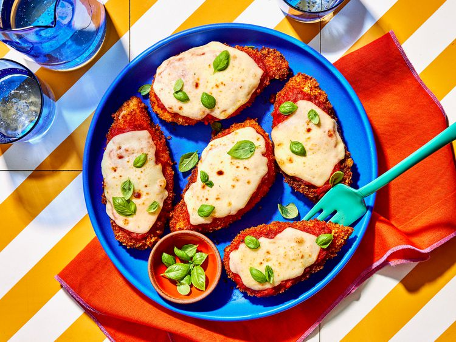

Chicken Parmesan

Chicken Parmesan is no doubt the most popular non-pasta dish in Italian-American style restaurants. And while this
delicious meal may seem fancy, it's actually pretty easy to make at home.
Top tips for making Chicken Parmesan
- Pound chicken to an even thickness
- Don't skimp on seasoning
- Add parmesan
- Rest before cooking
- Go easy on the sauce
- Make sure your oven is hot, hot, hot
Ingredients
- 4 skinless, boneless chicken breast halves
- salt and freshly ground black pepper to tast
- 2 large eggs
- 1 cup panko bread crumbs, or more as needed
- 3/4 cup grated Parmesan cheese, divided
- 2 tablespoons all-purpose flour, or more if needed
- 1/2 cup olive oil for frying, or as needed
- 1/2 cup prepared tomato sauce
- 1/4 cup fresh mozzarella, cut into small cubes
- 1/4 cup chopped fresh basil
- 1/2 cup grated provolone cheese
- 2 teaspoons olive oil
- Gather the ingredients. Preheat an oven to 230C.
- Place chicken breasts between two sheets of heavey plastic (resealable freezer bags work well) on a solid, level
surface. Firmly pound chicken with the smooth side of a meat mallet to a thickness of 1/2 inch.
- Season chicken thoroughly with salt and pepper. Using a sifter or strainer; sprinkle flour over chicken breasts,
evenly coating both sides
- Beat eggs in a shallow bowl and set aside. Mix bread crumbs and 1/2 cup Parmesan cheese in separate bowl, set
aside. Dip a flour-coated chicken breast in beaten eggs. Transfer breast to the bread crumb mixture, pressing
crumbs into both sides. Repeat for each breast. Let chicken rest for 10 to 15 minutes.
- Heat 1/2 inch olive oil in a large skillet on medium-high heat until it begins to shimmer. Cook chicken in the
hot oil until golden, about 2 minutes per side. The chicken will finish cooking in the oven.
- Transfer chicken to a baking dish. Top each breast with 2 tablespoons tomato sauce. Layer each chicken breast
with equal amounts of mozzarella cheese, fresh basil and provolone cheese. Sprinkle remaining Parmesan over top
and drizzle each with 1/2 teaspon olive oil.
- Bake in the preheated oven until cheese is browned and bubbly and chicken breasts are no longer pink in the
center, 15 to 20 minutes. An instant-read thermometer inserted into the center should read at least 74C